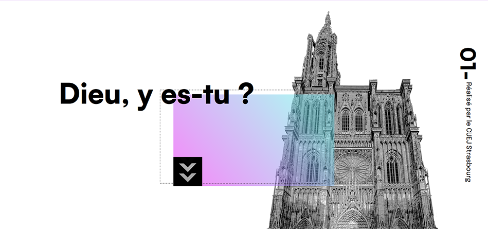

CUEJ
CMS
PHP
SQL
En bref
Les étudiants en master de journalisme de l'université de Strasbourg avaient besoin d'un site pour mettre leur projet de fin de semestre. Par équipe de 5, nous avons réalisé leur site en créant nous mêmes un CMS pour qu'ils puissent mettre leurs données dedans.
Mes tâches
J'ai conçu la base de données complexes à l'aide de MySQL, puis j'ai aidé à développer le CMS et approfondir la méthode CRUD. J'ai également fait la mise en page d'un article avec le formulaire pour rentrer les données. Pour faciliter l'insertion des éléments par les étudiants, j'ai rédigé un mode d'emploi.
Mon équipe
BALU Alixan, CELMA Annelise, DEBIEVE Lilia, HUOT Anthony et moi
